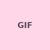
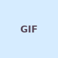

Kenangan Kita
Beberapa momen sederhana yang ingin kusimpan baik-baik.



Aku senang punya banyak momen sederhana yang bisa dikenang bersamamu.
foto 1 dari 3
Satu video untuk dikenang 🎞️
Momen kecil kita, yang semoga tetap terasa hangat saat ditonton lagi.
Lagu untuk hari spesialmu 🎵
Monokrom — Tulus
Putar video musik resmi di bawah ini. Jika musik tidak langsung berjalan, tekan tombol putar.
Video resmi: TULUS — Monokrom